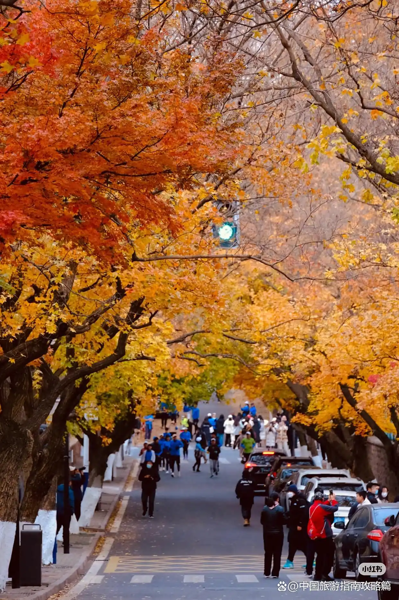
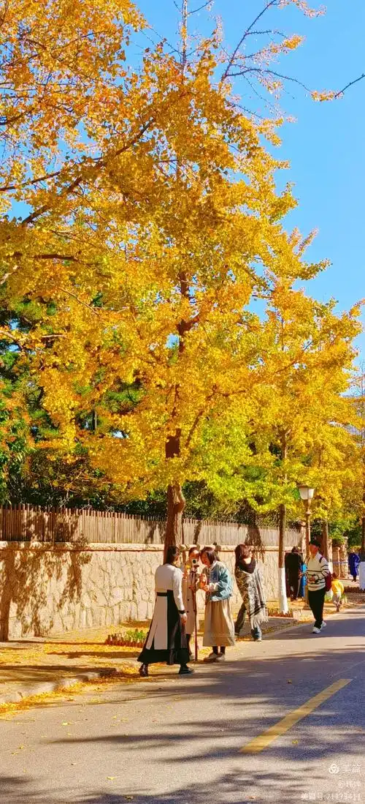
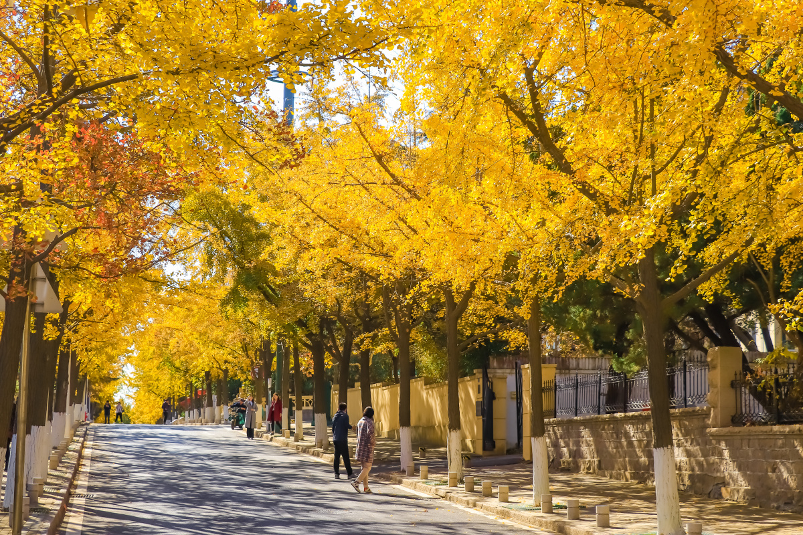
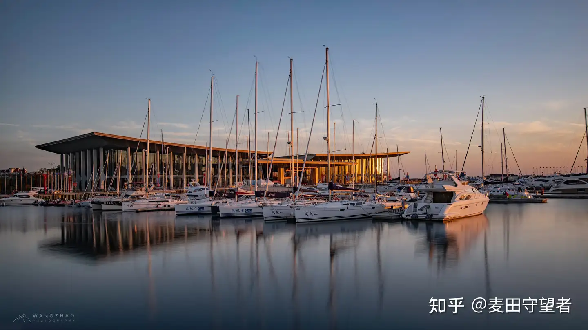

Introduction
万国建筑的露天博物馆
八大关，位于青岛市南区海滨，是最能体现青岛「红瓦绿树、碧海蓝天」特色的区域。这里的道路以中国八大关隘命名——韶关路、宁武关路、紫荆关路、山海关路、居庸关路、临淮关路、正阳关路、函谷关路——因此得名「八大关」。
这片区域汇聚了俄、英、法、德、美、丹麦、希腊、西班牙、瑞士、日本等二十多个国家的各式建筑风格，因此被誉为「万国建筑博览会」。三百余栋风格迥异的别墅散落在绿树花丛之中，哥特式的尖顶、巴洛克的曲线、拜占庭的穹顶、田园式的木屋……每一栋建筑都有自己的故事。
八大关的魅力不仅在于建筑，更在于四季分明的自然之美。春天，韶关路的碧桃与宁武关路的海棠竞相绽放，粉白相间如云霞；夏天，正阳关路的紫薇花开满枝头；秋天，居庸关路的银杏叶铺成金色地毯，嘉峪关路的枫叶红似火焰；冬天，紫荆关路的雪松常青，与白雪相映成趣。这里还是中国著名的婚纱摄影圣地，几乎每一天都能看到新人在此留下幸福的瞬间。
Visitor Info
Gallery
光影八大关




Highlights
不可错过的打卡点
建于1930年，融合了希腊式、哥特式、罗曼式等多种建筑风格，外墙由花岗岩砌成，是八大关最著名的建筑之一。楼顶观景台可俯瞰第二海水浴场和整个八大关全景。据说蒋介石曾在此居住，故又称「蒋介石楼」。
一座丹麦风格的蓝绿色别墅，建于1932年。相传为迎接丹麦公主而建，虽然后来公主并未到访，但这座童话般的建筑却成为八大关最浪漫的存在。尖尖的屋顶、明亮的色彩，仿佛从安徒生童话中走出来一般。
位于八大关南端，沙质细腻、水质清澈，是青岛最受欢迎的海水浴场之一。相比于第一海水浴场更为清静，周围绿树成荫，是夏日消暑的绝佳去处。毛泽东曾多次在此游泳。
每年深秋（11月上中旬），居庸关路两旁的银杏树变得金黄灿烂，落叶铺满路面，形成一条金色的梦幻走廊。这是青岛最著名的秋景观赏地之一，吸引了无数摄影爱好者和游客前来打卡。
Tips
游玩建议
从山海关路进入 → 花石楼 → 第二海水浴场 → 沿滨海木栈道向西 → 公主楼 → 居庸关路（银杏大道） → 韶关路 → 正阳关路紫薇花道 → 结束于太平角公园。全程约2.5公里，步行拍照约2-3小时。
春秋两季是八大关最美的时节。春季（4月）拍樱花和海棠，秋季（10月底-11月）拍银杏和枫叶。清晨光线最佳，游客也最少。
建议步行或租共享单车游览。八大关道路起伏不大，非常适合骑行。也可乘坐地铁3号线到中山公园站下车，步行约10分钟即达。
部分建筑为私人住宅或办公场所，不可入内参观。周末和节假日游客较多，建议工作日前往。秋季银杏季人流量极大，建议上午9点前到达。